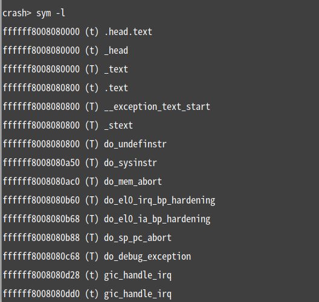

4.5.4. crash分析ramdump
4.5.4.1. 准备工作
我们需要在PC机上运行crash,从源码来编译,
可以从Redhat社区下载源码。
解压后，进入目录后使用一下命令：
make target=arm64
make install
这样就安装好了crash了。
4.5.4.2. crash介绍
crash主要是用来离线分析linux内核内存转存文件，它整合了gdb工具，具有很强的功能，可以查看堆栈，dmesg日志，内核数据结构，反汇编等等．其支持多种工具生成的内存转储文件格式，包括：
Live linux系统
kdump产生的正常的和压缩的内存转储文件
由makedumpfile命令生成的压缩的内存转储文件
由netdump生成的内存转储文件
由diskdump生成的内存转储文件.
由kdump生成的Xen的内存转储文件
LKCD生成的内存转储文件
Mcore生成的内存转储文件
ramdump格式的raw内存转储文件
4.5.4.3. crash使用方法
本文主要使用crash来分析ramdump文件．ramdump文件几乎是对整个内存的镜像，除了一些security类型的memory抓不出来之外，几乎所有的DRAM都被抓下来．有些问题的复现概率低，而且有些问题是由于踩内存导致的，这种问题靠log往往是无法分析出来的，所以如果可以在问题发生时候把内存镜像保存下来，就可以分析了．
在命令行下使用如下命令，在”@”后面跟的是DRAM的物理内存开始的物理地址：
#crash <vmlinux> <ram_dump_img@dram_addr_phy_start>
这里的vmlinux是和ram dump上的内核要一致，而且是需要打开内核的debug选项.
Crash成功启动后，会出现如下的信息：
这里就可以看到关于一些系统的信息等等；接下来我们可以在”crash>”输入命令来分析了。
4.5.4.4. crash中的命令使用
ps
该命令可以输出进程信息
这里的进程状态标志：
RU：即Ｒ状态，进程处于TASK_RUNNING.
IN：S状态，进程处于TASK_INTERRUPTIBLE.
UN：D状态，进程处于TASK_UNINTERRUPTIBLE.
bt <pid>
用于查看某个线程或进程的调用栈
bt -a：以任务为单位，显示每个任务的堆栈信息.
bt -t：显示当前任务的堆栈中的所有文本标志付
bt -f：显示当前任务的所有堆栈数据，通常用来检查每个函数的参数传递.
#@# dis <函数名>
用于反汇编某个函数.
dis后面还可以跟着的参数有：
-l | -u | -b num | address| symbol| expression| count
whatis -o <结构体>
用于查看结构体．这后面还可以跟联合体，宏的名称或者内核的符号.
rd <虚拟地址>
用于查看虚拟地址的值.其后面可以跟的参数还有：
-dDsSupxmf | -8 | -16| -32| -64| -o offset| -e addr| address| symbol |count
struct <结构体> <该结构体的虚拟地址>
用于查看该虚拟地址处，该结构体的值，使用这个可以查看某个进程在所拥有的某个结构体的值
struct <结构体>.成员，成员<结构体的虚拟地址>
用于查看该结构体的内部成员的值.
sym
用于把一个标志符转换到它所对应的虚拟地址，或者把虚拟地址转换为它所对应的标志符。
sym -l：列出所有的标志符以及虚拟地址.
sym -M：列出模块标志符的集合．
sym -m module <name>：列出模块name的虚拟地址
sym vaddr：显示虚拟地址vaddr所代表的标志．
sym -q <string>：搜索所有包含string的标志以及虚拟地址.

task [ -R member][,member] [pid]
用于显示指定进程的task_struct的内容.
timer
用于显示timer相关信息.
kmem -i
用于查看内存使用信息.
l *虚拟地址
用于查看指定地址对应的代码行.
4.5.4.5. 附：crash中常用的命令
| 命令 | 说明 | 例子 |
|---|---|---|
| * | 指针的快捷方式，用于代替struct/union | *page 0xc02943c0：显示0xc02943c0地址的page结构体 |
| files | 显示已打开的所有文件的信息 | files 462：显示进程462的已打开文件信息 |
| mach | 显示与机器相关的参数信息 | mach：显示CPU型号，核数，内存大小等 |
| sys | 显示特殊系统的数据 s | ys config：显示CONFIG_xxx配置宏状态 |
| timer | 无参数。按时间的先后顺序显示定时器队列的数据 | timer：显示详细信息 |
| mod | 显示已加载module的详细信息 | mod：列出所有已加载module信息 |
| runq | 显示runqueue信息 | runq：显示所有runqueue里的task |
| tree | 显示基数树/红黑树结构 | tree -t rbtree -o vmap_area.rb_node vmap_area_root：显示所有红黑树vmap_area.rb_node节点地址 |
| fuser | 显示哪些task使用了指定的文件/socket | fuser /usr/lib/libkfm.so.2.0.0：显示使用了该文件的所有进程 |
| mount | 显示已挂载的文件系统信息 | mount：当前已挂载的文件系统信息 |
| ipcs | 显示System V IPC信息 | ipcs：显示系统中System V IPC信息 |
| ps | 显示进程状态 | 注意：类似ps命令 |
| struct | 显示结构体的具体内容 | struct vm_area_struct c1e44f10：显示c1e44f10结构 |
| union | 显示联合体的具体内容，用法与struct一致 | union bdflush_param：显示bdflush_param结构 |
| waitq | 列出在等待队列中的所有task。参数可以指定队列的名称、内存地址等 | waitq buffer_wait：显示buffer_wait等待队列信息 |
| irq | 显示中断编号的所有信息 | irq 18：显示中断18的信息 |
| list | 显示链表的内容 | list task_struct.p_pptr c169a000：显示c169a000地址所指task里p_pptr链表 |
| log | 显示内核的日志，以时间的先后顺序排列 | log -m：显示kernel log |
| dev | 显示数据关联着的块设备分配，包括端口使用、内存使用及PCI设备数据 | dev：显示字符/块设备相关信息 |
| sig | 显示一个或者多个task的signal-handling数据 | sig 8970：显示进程8970的信号处理相关信息 |
| task | 显示指定内容或者进程的task_struct的内容 | task -x：显示当前进程task_struct等内容 |
| swap | 无参数。显示已配置好的交换设备信息 | swap：交换设备信息 |
| search | 在给定范围的用户、内核虚拟内存或者物理内存搜索值 | search -u deadbeef：在用户内存搜索0xdeadbeef |
| bt | 显示调用栈信息 | bt：显示当前调用栈 |
| net | 显示各种网络相关的数据 | net：显示网络设备列表 |
| vm | 显示task的基本虚拟内存信息 | vm：类似于/proc/self/maps |
| btop | 把一个16进制地址转换成它的分页号 | N/A |
| ptob | 该命令与btop相反，是把一个分页号转换成地址 | N/A |
| vtop | 显示用户或内核虚拟内存所对应的物理内存 | N/A |
| ptov | 该命令与vtop相反。把物理内存转换成虚拟内存 | N/A |
| pte | 16进制页表项转换为物理页地址和页的位设置 | N/A |
| alias | 显示或建立一个命令的别名 | alias kp kmem -p：以后用kp命令相当于kmem -p |
| foreach | 用指定的命令枚举 | foreach bt：显示所有进程的调用栈 |
| repeat | 循环执行指定命令 | repeat -1 p jiffies：每个1s执行p jiffies |
| ascii | 把16进制表示的字符串转化成ascii表示的字符串 | ascii 62696c2f7273752f：结果为/usr/lib |
| set | 设置要显示的内容，内容一般以进程为单位，也可以设置当前crash的内部变量 | set -p：切换到崩溃进程的上下文环境 |
| p | print的缩写，打印表达式的值。表达式可以为变量，也可以为结构体 | N/A |
| dis | disassemble的缩写。把一个命令或者函数分解成汇编代码 | dis sys_signal：反汇编sys_signal函数 |
| whatis | 搜索数据或者类型的信息 | whatis linux_binfmt：显示linux_binfmt结构体 |
| eval | 计算表达式的值，及把计算结果或者值显示为16、10、8和2进制 | N/A |
| kmem | 显示当前kernel使用内存状况 | kmem -i：显示kernel使用内存状况 |
| sym | 显示符号所在的虚拟地址，或虚拟地址对应的符号 | sym jiffies：显示jiffies地址 |
| rd | 显示指定内存的内容。缺少的输出格式是十六进制输出 | rd -a linux_banner：显示linux_banner内容 |
| wr | 根据参数指定的写内存。在定位系统出错的地方时，一般不使用该命令 wr | my_debug_flag 1：修改my_debug_flag值为1 |
| gdb | 执行GDB原生命令 | gdb help：执行gdb的help命令 |
| extend | 动态装载或卸载crash额外的动态链接库 | N/A |
| q | 退出 | N/A |
| exit | 同q，退出 | N/A |
| help | 帮助命令 | N/A |